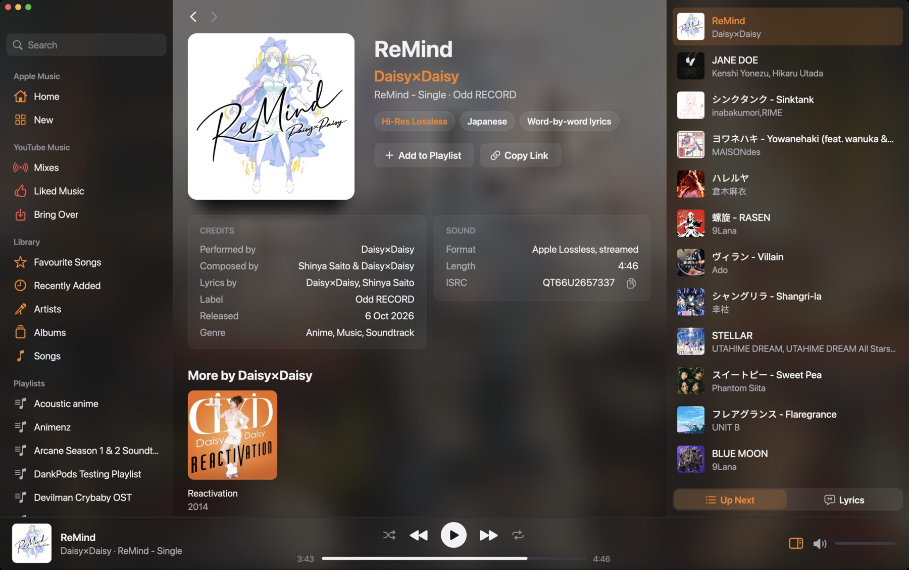
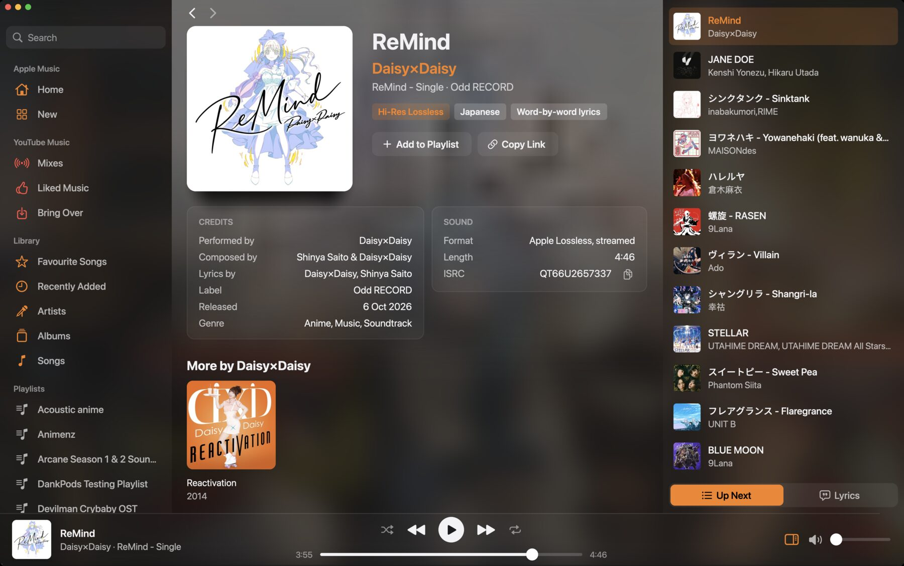
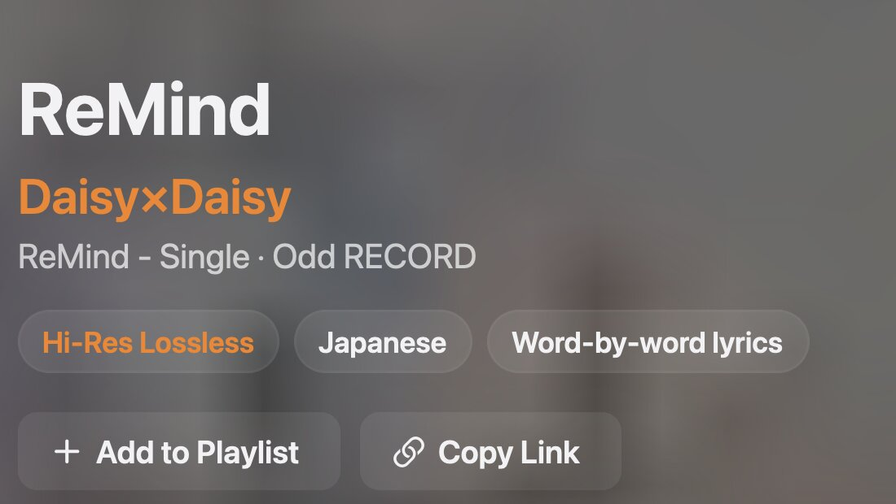
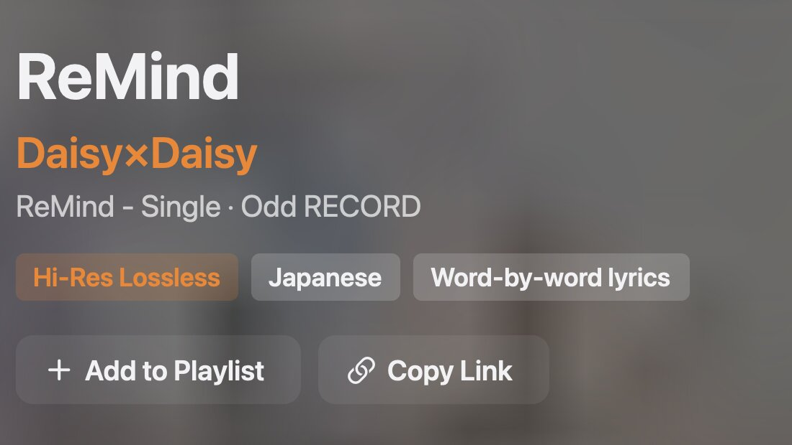
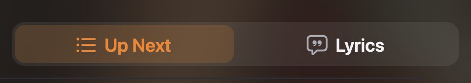
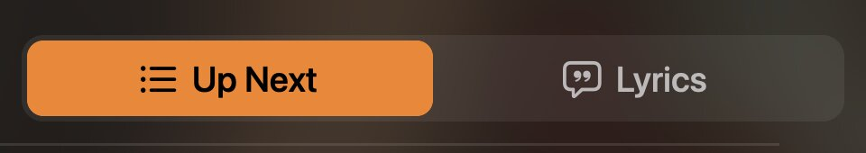
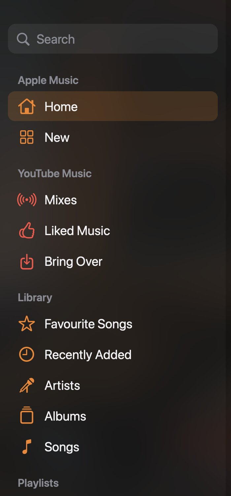
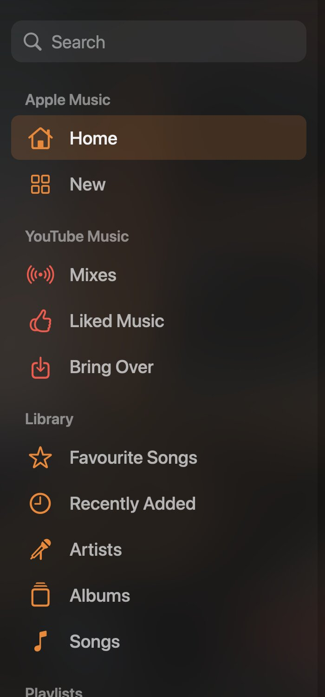
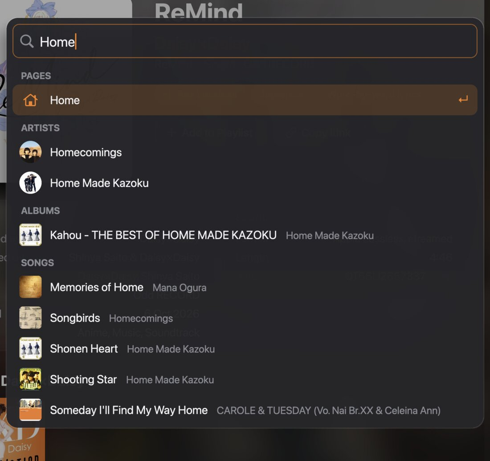
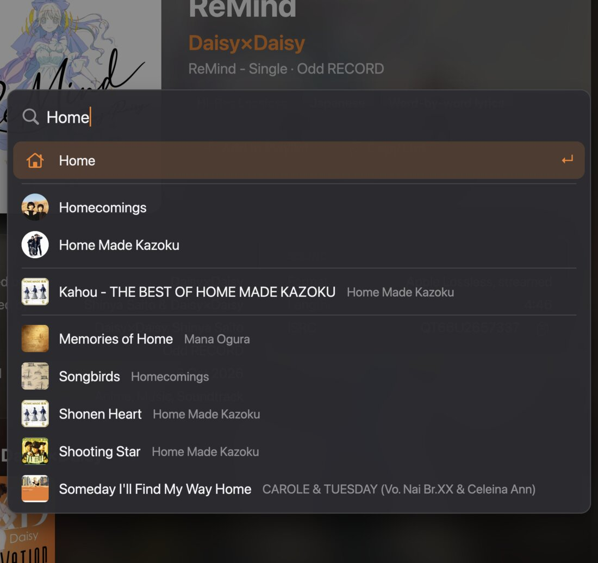

onlymuse on thor,
then and now
On 9 November onlymuse first ran entirely on thor: its layers had moved into thor, but the app still drew most of its controls itself. Five days and 68 commits later it is built from thor's kit components, and thor grew the pieces onlymuse was missing.
src, −841kit, +39%ui.box calls, −23%src, 65 filesLook
Both builds ran on the same copy of the library, in an 1800 × 1130 window at 150% zoom. Drag across a screen to compare.


Album badges and buttons
Round pills became kit.badge: squarer corners, a tighter fit, the same colours. The buttons are unchanged.

Then
NowUp Next and Lyrics
The tinted tab became kit.segmented, filled with the primary colour so the open panel reads at a glance.

Then
NowSidebar
It looks the same. Its rows are kit.nav_row now, so the whole sidebar is one Tab stop and the arrow keys move between pages.

Then
NowPlayer bar
Seek and volume are kit.slider and show a thumb. The time and title text is unchanged.
Command palette
The palette sits in kit.palette_dialog: a little lower, at 18% of the window's height, in kit's dialog look. Thin dividers replace the uppercase group titles, and Tab moves the choice like the arrows.

Then
NowBehavior
Most of what changed is in how onlymuse responds, not how it looks. Each row below names what you'd notice.
Pointer and dragging
- ChangedA press that moves more than 3 points is a drag, on every control. It never also counts as a click.
- NewThe closed hand shows while a song is dragged, wherever it goes.
- ChangedDropping a song on a playlist uses thor's
is_dropped_on; the old guard that stopped a drop from also opening the song is gone. - ChangedSliders set on release wherever the pointer ends, even off the track. Before, releasing off the seek bar set nothing.
Keyboard
- NewTab moves focus through the app. Space, the arrows and Return go to the focused control, and still play, seek and change the volume until you Tab.
- NewThe sidebar is one Tab stop; the arrow keys move between its rows.
- FixedShortcuts match their modifiers exactly, so ⌘← skips back without also seeking.
- NewTab and Shift-Tab move the palette's choice, as the arrows do.
- NewSong menus take the arrow keys, and their playlists open as a submenu.
Menus, popovers and dialogs
- ChangedThe context menu opens at the click, with playlists in a submenu beside it on the side with room.
- FixedAdd to Playlist and Shuffle rules anchor to their button, so a second click closes them.
- ChangedThe menu bar is thor's, with Hide, Show All, Quit, Edit and View. Play in Music.app sits at the top of the app menu, checked while Music.app plays.
- ChangedThe sign-in card is a dialog that Escape can't close; only signing in does.
- ChangedThe shuffle rules are a popover with a small segmented control and switches on the trailing edge, spaced evenly.
Motion and scrolling
- ChangedEvery animation runs on kit's motion, which follows Reduce Motion.
- ChangedThe loading bar is an indeterminate progress bar; under Reduce Motion it pulses in place instead of sweeping.
- FixedShelf tiles scale smoothly while the side panel opens, and keep their image instead of jumping a point at a time.
- ChangedSong lists, grids, shelves and the queue build only the rows on screen through
kit.list. - FixedA page's scroll is saved once it has settled, and the toolbar fits its buttons when the window has no title bar.
VoiceOver
- NewPlayer controls have names; the seek bar reads Position with the time.
- NewRows, cards and links can be pressed, and shuffle, repeat and the panel buttons are announced as toggles.
- NewArtwork reads as an image named for its album, card or artist, and the loading bar reads busy.
Playback and the app
- FixedNext and Previous on the web player no longer open Music.app.
- FixedYouTube mix covers no longer stand in for each other.
- ChangedZoom belongs to thor: its keys, steps and saving. The zoom onlymuse saved itself is no longer read, so the first launch opened at 100%.
- ChangedPalette matches rank a start, then a word start, then anywhere; loose letters-in-order matches are left out.
Code
onlymuse's code got smaller as thor got bigger. Each piece onlymuse built by hand moved into a thor component, or thor grew one, and onlymuse deleted its copy.
A hand-placed card with its own width, half-height and centring became a kit.dialog that only signing in can close.
SIGN_IN_CARD_WIDTH_POINTS :: 380
SIGN_IN_CARD_HALF_HEIGHT_POINTS :: 110
build_sign_in_card :: proc() {
root := ui.current_parent()
window_size := [2]f32{root.style.width.value, root.style.height.value}
cover := ui.box(
"sign in cover",
{
width = ui.fill(),
height = ui.fill(),
background = kit.to_color(0x000000a0),
position = {0, 0},
flags = {.Floating, .Clickable},
},
)
if ui.scope(cover) {
card := ui.box(
"card",
{
width = ui.points(SIGN_IN_CARD_WIDTH_POINTS),
height = ui.fit_children(),
axis = .Y,
gap = 12,
padding = {24, 24, 24, 24},
corner_radius = 14,
background = kit.colors.card,
border_width = 1,
border_color = kit.colors.line,
position = {
(window_size.x - SIGN_IN_CARD_WIDTH_POINTS) / 2,
window_size.y / 2 - SIGN_IN_CARD_HALF_HEIGHT_POINTS,
},
flags = {.Floating},
},
)
if ui.scope(card) {
ui.box(
"",
{
width = ui.fill(),
height = ui.fit_text(),
text_color = kit.colors.text,
font_size = 18,
font_weight = .Bold,
},
"Sign in to Apple Music",
)
ui.box(
"",
{
width = ui.fill(),
height = ui.fit_text(),
text_color = kit.colors.dim,
flags = {.Wrap_Text},
},
"onlymuse reads Apple Music with the sign-in of music.apple.com. Apple's own sign-in page opens in a window of its own.",
)
label := "Open the sign-in window again" if core.app.is_sign_in_open else "Sign In"
if kit.action_button(label, "person.crop.circle", true) {
core.app.is_sign_in_open = true
helper.send_sign_in()
}
}
}
}build_sign_in_card :: proc() {
if kit.dialog("sign_in", &core.app.is_sign_in_needed, is_dismissable = false) {
kit.heading("Sign in to Apple Music", .Small)
kit.description("onlymuse reads Apple Music with the sign-in of music.apple.com. Apple's own sign-in page opens in a window of its own.")
label := "Open the sign-in window again" if core.app.is_sign_in_open else "Sign In"
if kit.button("sign_in", label, "person.crop.circle", .Primary).is_activated {
core.app.is_sign_in_open = true
helper.send_sign_in()
}
}
}onlymuse built the whole menu bar in Objective-C to add one item. thor now owns the bar; onlymuse lists its item each frame and reads the pick.
package macos
import "base:intrinsics"
import NS "core:sys/darwin/Foundation"
Player_Menu :: struct {
is_driving: proc() -> bool,
toggle: proc(),
}
install_player_menu :: proc(player: Player_Menu) {
state.player_menu = player
empty_key := NS.String.alloc()->initWithOdinString("")
app_item := NS.MenuItem.alloc()->initWithTitle(
NS.String.alloc()->initWithOdinString("onlymuse"),
nil,
empty_key,
)
app_menu := NS.Menu.alloc()->initWithTitle(NS.String.alloc()->initWithOdinString("onlymuse"))
state.player_menu_item =
NS.MenuItem.alloc()->initWithTitle(
NS.String.alloc()->initWithOdinString("Play in Music.app"),
intrinsics.objc_find_selector("togglePlayerMode:"),
empty_key,
)
NS.MenuItem_setTarget(state.player_menu_item, state.target)
NS.Menu_addItem(app_menu, state.player_menu_item)
NS.Menu_addItem(app_menu, NS.MenuItem_separatorItem())
quit_item := NS.MenuItem.alloc()->initWithTitle(
NS.String.alloc()->initWithOdinString("Quit onlymuse"),
intrinsics.objc_find_selector("quitApp:"),
NS.String.alloc()->initWithOdinString("q"),
)
NS.MenuItem_setTarget(quit_item, state.target)
NS.Menu_addItem(app_menu, quit_item)
main_menu := NS.Menu.alloc()->initWithTitle(NS.String.alloc()->initWithOdinString("onlymuse"))
NS.Menu_addItem(main_menu, app_item)
NS.Menu_setSubmenu(main_menu, app_menu, app_item)
NS.Application.sharedApplication()->setMainMenu(main_menu)
}
@(objc_type = Macos_Target, objc_implement, objc_name = "togglePlayerMode", objc_selector = "togglePlayerMode:")
Macos_Target_togglePlayerMode :: proc "c" (self: ^Macos_Target, item: NS.id) {
context = state.odin_context
state.player_menu.toggle()
}
@(objc_type = Macos_Target, objc_implement, objc_name = "validateMenuItem", objc_selector = "validateMenuItem:")
Macos_Target_validateMenuItem :: proc "c" (self: ^Macos_Target, item: ^NS.MenuItem) -> NS.BOOL {
context = state.odin_context
if item == state.player_menu_item {
objc_send(nil, item, "setState:", NS.Integer(1 if state.player_menu.is_driving() else 0))
}
return true
}// The app menu's first item switches between the web player and Music.app, checked while Music.app plays.
@(private = "file")
apply_player_menu :: proc() {
items := []platform.Menu_Item{{id = "music_app", label = "Play in Music.app", is_checked = core.app.drives_music_app}}
app.set_menu_items(items)
if ui.is_menu_picked("music_app") do core.set_player_mode(!core.app.drives_music_app)
}The drag threshold, the release scan and the ended_frame guard are gone: thor reports is_dragged and is_dropped_on, and a drag never counts as a click.
apply_song_row_signal :: proc(signal: ui.Signal, song: core.Catalog_Song) -> bool {
if signal.is_right_clicked do open_song_menu(song, ui.mouse_position())
press, is_down := ui.press_position()
moved := ui.mouse_position() - press
has_moved := moved.x * moved.x + moved.y * moved.y > DRAG_START_POINTS * DRAG_START_POINTS
can_start_drag := signal.is_held && is_down && !drag.is_dragging && song.id != ""
if can_start_drag && has_moved {
drag = {
is_dragging = true,
song = core.copy_song(song),
}
}
return signal.is_clicked && drag.ended_frame != app.frame_count
}
apply_song_drop :: proc(
is_hovered: bool,
playlist_id, playlist_name: string,
can_edit: bool,
) -> bool {
if !drag.is_dragging || !is_hovered || !can_edit do return false
if is_mouse_released() do add_to_playlist(playlist_id, playlist_name, drag.song)
return true
}
@(private = "file")
is_mouse_released :: proc() -> bool {
for event in platform.list_events() {
if release, ok := event.(platform.Mouse_Release); ok && release.button == .Left {
return true
}
}
return false
}
apply_drag_release :: proc() {
if !drag.is_dragging || !is_mouse_released() do return
core.delete_song(drag.song)
drag = {
ended_frame = app.frame_count,
}
}apply_song_row_signal :: proc(signal: ui.Signal, song: core.Catalog_Song) -> bool {
if signal.is_secondary do open_song_menu(song, ui.pointer_pos())
can_start_drag := signal.is_dragged && !drag.is_dragging && song.id != ""
if can_start_drag {
drag = {
is_dragging = true,
song = core.copy_song(song),
}
}
// The pressed row's cursor shows until the release, wherever the song is dragged.
if drag.is_dragging && signal.is_held do signal.box.style.cursor = .Closed_Hand
return signal.is_activated
}
// Adds the dragged song to the playlist when it is dropped on its row, and says whether the row shows as
// the drop target now.
apply_song_drop :: proc(
signal: ui.Signal,
playlist_id, playlist_name: string,
can_edit: bool,
) -> bool {
if !drag.is_dragging || !can_edit do return false
if signal.is_dropped_on do add_to_playlist(playlist_id, playlist_name, drag.song)
return signal.is_hovered
}
apply_drag_release :: proc() {
if !drag.is_dragging || ui.interaction().is_held do return
core.delete_song(drag.song)
drag = {}
}The sweep maths and the paint wiring became one indeterminate kit.progress, which also pulses in place under Reduce Motion.
sweep := f32(1 - math.cos(2 * math.PI * shown_seconds / LOADING_SWEEP_SECONDS)) / 2
first_ratio := sweep * (1 - LOADING_SEGMENT_RATIO)
if ui.scope(column) {
track := ui.box(
"",
{
width = ui.points(LOADING_BAR_WIDTH_POINTS),
height = ui.points(kit.BAR_TRACK_HEIGHT_POINTS),
},
)
paint := new(kit.Bar_Paint, context.temp_allocator)
paint^ = {first_ratio, first_ratio + LOADING_SEGMENT_RATIO}
track.draw = kit.draw_bar
track.data = paint
// look/theme.odin
LOADING_SWEEP_SECONDS :: 1.6
LOADING_SEGMENT_RATIO :: 0.3 if ui.scope(column) {
kit.progress(0, .Base, ui.points(LOADING_BAR_WIDTH), is_indeterminate = true)Files that changed most
- app/menus/song_menu.odin+163 −181
- app/player/panel.odin+85 −168
- app/look/artwork.odin+30 −124
- app/playback/shuffle.odin+61 −93
- app/frame.odin+61 −78
- app/lists/song_rows.odin+47 −86
- app/player/player_controls.odin+57 −72
- app/browse/album_page.odin+47 −81
- app/lists/cards.odin+55 −73
- app/palette/palette.odin+31 −80
- app/main.odin+22 −88
- app/player/player_bar.odin+38 −72
Kit vocabulary
32 new
kit.as_buttonkit.as_togglekit.badgekit.buttonkit.clickablekit.descriptionkit.dialogkit.dividerkit.focus_inputkit.gridkit.has_focused_inputkit.headingkit.imagekit.listkit.menukit.nav_rowkit.palette_dialogkit.popoverkit.progresskit.segmentedkit.set_input_textkit.sliderkit.submenukit.textkit.text_fieldkit.to_badge_widthkit.to_color_from_hsvkit.to_input_textkit.to_match_scorekit.toastkit.togglekit.with_opacity9 kept
kit.icon_boxkit.measure_textkit.menu_itemkit.menu_separatorkit.scrolling_textkit.show_toastkit.to_colorkit.to_color_from_hexkit.toggle_chip21 gone or renamed
kit.action_buttonkit.barkit.build_text_fieldkit.build_toastkit.focus_fieldkit.has_focused_fieldkit.icon_buttonkit.is_mouse_inkit.menu_boxkit.menu_item_signalkit.mix_colorkit.notekit.page_headingkit.set_field_textkit.spacerkit.text_boxkit.to_accent_tintkit.to_color_from_hex_digitskit.to_color_from_hslkit.to_fadedkit.to_field_textDeleted and added files
- app/zoom.odin−66
- macos/menu.odin−43
- app/look/menu_box.odinadded, then deleted
- app/saved_window.odin+new
Up Next: 68 commits
- 09Build the song rows, the card grid and the queue with kit.listMon 09 Nov · 0384e8e
- 09Use kit's new names for text, headings, notes, buttons and fieldsMon 09 Nov · edad9d0
- 09Scroll the bench with thor's dev.bench_scrollMon 09 Nov · fb3f6c2
- 10Follow thor: icon_button takes is_disabledTue 10 Nov · 231d232
- 10Use thor's zoomTue 10 Nov · 9f41c9f
- 10Put the player item in thor's app menuTue 10 Nov · 1fa8cd8
- 10Leave Tab, the arrows, Return and Space to focus when it uses themTue 10 Nov · 66db0fd
- 10Follow thor's components returning a ui.SignalTue 10 Nov · e29a635
- 10Stay dark, with the window colour and accent on thor's dark paletteTue 10 Nov · 5e5ad57
- 10Move onto thor's daisyUI-classified tokens and tonesTue 10 Nov · cf1f9d4
- 10Follow thor's named keysTue 10 Nov · 2ef2f18
- 10Panel tabs and card grids on thor's segmented and gridTue 10 Nov · 2d82f24
- 11Rank palette matches with thor's to_match_scoreWed 11 Nov · 3e65797
- 11Follow thor's reviewed APIWed 11 Nov · a147689
- 11Centre the play symbol in its circle againWed 11 Nov · e204d67
- 11Use segmented and toggle_chipWed 11 Nov · 64f7437
- 11Reword comments and alerts in plain technical EnglishWed 11 Nov · aade217
- 11Use kit.motion for every animationWed 11 Nov · b188518
- 11Use kit.colors.line for borders and linesWed 11 Nov · 6592a6f
- 11Rename kit.to_faded to kit.with_opacityWed 11 Nov · 5b35ab7
- 12Give VoiceOver words for the player's controlsThu 12 Nov · 9e78dcb
- 12Follow thor: corner_radius per corner, and no bench callThu 12 Nov · f25a50a
- 12Follow thor: gradients are Style.layersThu 12 Nov · 569f0a1
- 13Name the seek and volume sliders through thor's labelFri 13 Nov · 8f786b2
- 13Show the closed hand while a song is draggedFri 13 Nov · 0a05d83
- 13Follow thor: durations, time.Time for dates, linalg.lerpFri 13 Nov · 9c5b4e2
- 13Follow thor: Style.pointer and Style.text_fitFri 13 Nov · 6849676
- 13Follow thor: app.begin_frame returns a time.DurationFri 13 Nov · 4ea51d5
- 14Follow thor: images.fetch and to_family, durations, dates, is_accessorySat 14 Nov · 1f05128
- 14Follow thor: points keep no suffix, pixels end in _px, and the bg/pos/prev/buf/a11y shorthandsSat 14 Nov · 3a07d46
- 14Follow thor: scrolling_text pointer, format_date_time, CA_Layer, and measure wordsSat 14 Nov · 92cfa1a
- 14Send the helper its own word for the previous track againSat 14 Nov · be7fa9e
- 14Follow thor: one size scale, descriptions, and labels on every controlSat 14 Nov · fcea289
- 14Keep song row and album detail lines on one line, as beforeSat 14 Nov · c7fbc70
- 14Keep the song list header on one line, as beforeSat 14 Nov · 2f40359
- 14Follow thor: one fit length, safe areas, and a scroll set_scroll keepsSat 14 Nov · 472774e
- 14Name pages and list rows by ids, never by their labelsSat 14 Nov · e76ec2e
- 14Follow thor: save the page's scroll once set_scroll stops waiting, the toolbar takes the sidebar's safe inset, and grids pass their styleSat 14 Nov · eb19b4e
- 14Give the toolbar a height its buttons fit in when the window has no title bar, and share it with the sidebarSat 14 Nov · 1157261
- 14Show the Up Next and Lyrics switch in the primary colorSat 14 Nov · 19731e9
- 14Snap artwork's crop to the nearest quarter step, so tiles keep their image while a panel opensSat 14 Nov · 68a51cf
- 14Pick a shelf's tile count from the width the page settles at, so tiles scale smoothly while the panel movesSat 14 Nov · e8ce847
- 14Size shelf tiles in fractions of a point, so rows don't jump a point at onceSat 14 Nov · 15cd8e5
- 14Let Tab and Shift-Tab move the palette's choice, as the arrows doSat 14 Nov · d0cb1e0
- 14Keep a cover URL's query in its family, so YouTube's mix covers stop standing in for each otherSat 14 Nov · a6c5e49
- 14Add the thor overlap report: what onlymuse builds by hand that thor has, with the approved planSat 14 Nov · dba1741
- 14Use thor's components where onlymuse built its own (overlap report items 1-5 and 9)Sat 14 Nov · e408d1b
- 14Space the shuffle rules evenly: 14 points in on every side, labels by their control, groups apartSat 14 Nov · 82e34b8
- 14Add thor gaps 15-17 from the shuffle rules review, for approvalSat 14 Nov · 5d1a65c
- 14Use kit text's fit setting, and kit.description for one-line muted subtitles (thor gap 9)Sat 14 Nov · 2c11af7
- 14Use a Small segmented control in the shuffle rules (thor gap 15)Sat 14 Nov · 87ac5a7
- 14Anchor the shuffle rules to the button that opened it, so a second click closes them; give the rules one even gapSat 14 Nov · 5a9c367
- 14Record the approved redesigns of thor gaps 16 and 17Sat 14 Nov · 2d97893
- 14Build the shuffle rules as a plain kit.popover with trailing kit.toggle switches (thor gaps 16 and 17)Sat 14 Nov · a52abe6
- 14Build the song menus on kit.menu and kit.submenu, and delete look/menu_box.odin (overlap item 11)Sat 14 Nov · 83bc267
- 14Mark thor gaps 3 and 4 and item 11 done in the reportSat 14 Nov · 16a4beb
- 14Read the keyboard shortcuts through ui.is_key_pressed and ui.press_modifiers (overlap item 12)Sat 14 Nov · 1c5650a
- 14Mark thor gap 10 and item 12 done in the reportSat 14 Nov · 1d475a1
- 14On the web player, don't send next and previous to Music.app, which opened itSat 14 Nov · 375d1d9
- 14Draw artwork with kit.image, sized with images.to_texture_size_px (overlap item 13)Sat 14 Nov · 5da28ff
- 14Draw onlymuse's badges and pills with kit.badge (overlap item 7)Sat 14 Nov · 36c2471
- 14Build the sidebar rows with kit.nav_row (overlap item 6)Sat 14 Nov · a15ad81
- 14Put the palette in kit.palette_dialog (overlap item 14's shell)Sat 14 Nov · 4a47460
- 14Show the sign-in card as a kit.dialog that only signing in closes (overlap item 8)Sat 14 Nov · 9f0a557
- 14Draw the loading bar with kit.progress's is_indeterminate (overlap item 10)Sat 14 Nov · 8908f7d
- 14Drop songs on playlists with Signal.is_dropped_on, and drop the ended_frame guard (thor gap 11)Sat 14 Nov · 5fab3e2
- 14Put Play in Music.app in the app menu with app.set_menu_items, and delete the Objective-C menu code (thor gap 13)Sat 14 Nov · 601201c
- 14Mark thor gap 9 built in the reportSat 14 Nov · bd1575b
By day
Then is onlymuse 397e90e built against thor 5b3ab8f, the first build with every layer from thor. Now is onlymuse bd1575b with thor b64265f. Screenshots come from both builds run one after the other on a copy of the library; differences in Home's shelves come from Apple's data, not the app.